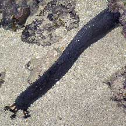
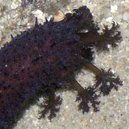
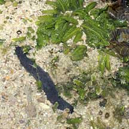
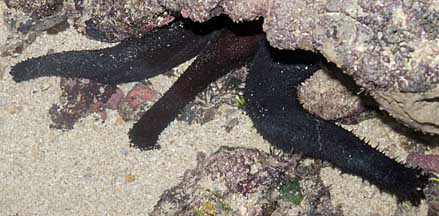
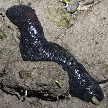

|
|
| sea cucumbers text index | photo index |
| Phylum Echinodermata > Class Holothuroidea |
| Black
long sea cucumber Holothuria leucospilota Family Holothuriidae updated Apr 2020 Where seen? This large long black sea cucumber is commonly seen on our reefy Southern shores. The animal usually hides most of its body under large boulders or rocks, with only the front feeding end sticking out. Elsewhere, it is considered a very common species, sometimes found in high densities, in reefs, seagrass meadows, sandy and muddy bottoms with rubble or reefs, from shallow areas to 10m deep. Features: About 30-40cm, it can lengthen to about 1m long. Body soft long cylindrical without an obvious under and upperside. With short soft pointed 'spines' and tube feet all over the body. Colour uniformly very dark brown or maroon to black, without any markings. Mouth facing downwards, with 20 large feeding tentacles short, same colour as the body, with bushy tips. When disturbed, it can release from its backside, thin sticky white cylindrical tubes called Cuvierian tubules. But those on our shores seldom do this. Baby cucumbers: The sea cucumber achieves sexual maturity at 180 g and sexual reproduction occurs twice a year, during the dry season. Smaller individuals may reproduce asexually with the long body dividing into two (transverse fission). Juveniles have a similar appearance to adults. |
 Sentosa, Aug 05 |
 Feeding tentacles with bushy tips. St. John's Island, Jan 06 |
 A small one (about 10cm long). Pulau Tekukor, Jan 10 |
| What does it eat? It gathers edible
bits from the surface. The mouth faces downward and has 20 long feeding tentacles with bushy
sticky tips. Most of the body is usually wedged under rocks or crevices
with only the front end extended out and the mouth facing downwards.
It swallows much sand in the process of eating. This is undigested
and defecated. Cosy cucumber: This sea cucumber is said to be a host to the pearl fish Encheliophis vermicularis. |
|
 Often several under a rock. Terumbu Selegie, Jun 11 |
 Out of water. Lazarus Island, Apr 12 |
|
| Human uses: This sea cucumber does not have high commercial value and is not harvested for the food trade nor live aquarium trade, because
of its thin skin and tendency to produce Cuvierian tubules when stressed. But there seems to be many studies investigating their biochemical
properties. Status and threats: This sea cucumber is listed as 'Vulnerable' on the Red List of threatened animals in Singapore. Although globally, according to the FAO, "it has one of the broadest distributions of all holothurians, and it can be found in most tropical localities in the western central Pacific, Asia and most Indian Ocean regions" |
| Black long sea cucumbers on Singapore shores |
On wildsingapore
flickr
|
| Other sightings on Singapore shores |
| Filmed on Pulau
Tekukor, Jan 10 blackseasucumbers from SgBeachBum on Vimeo. |
Links
|